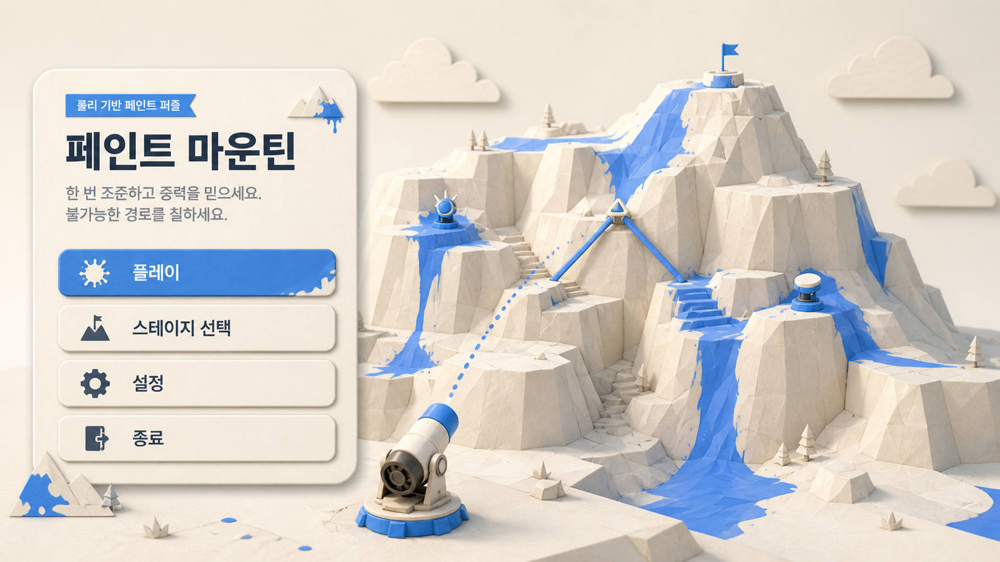
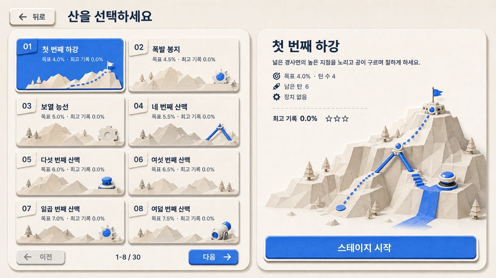
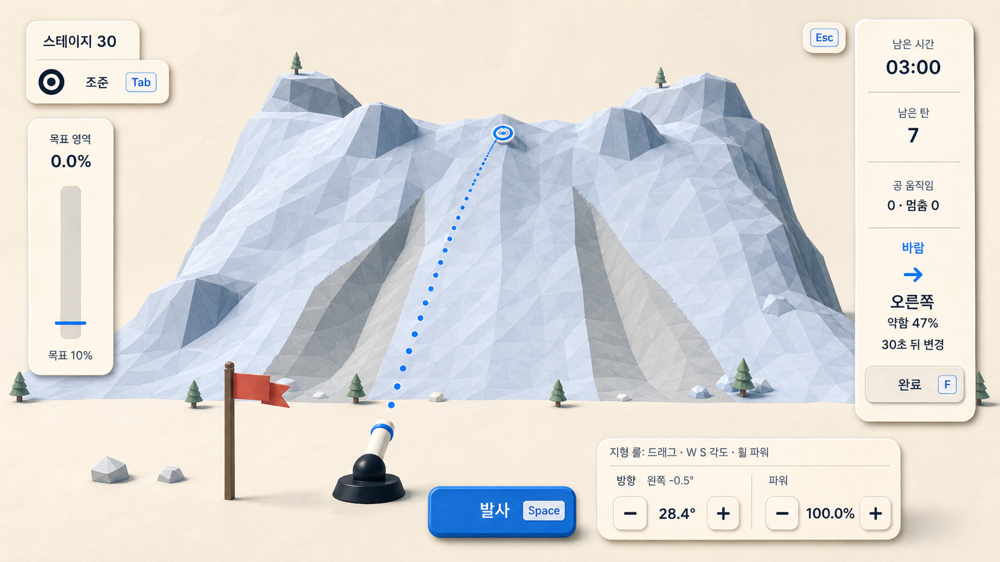
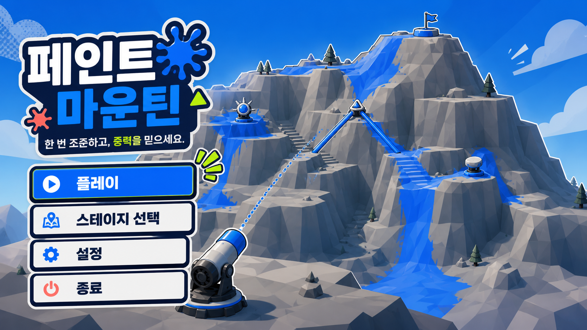
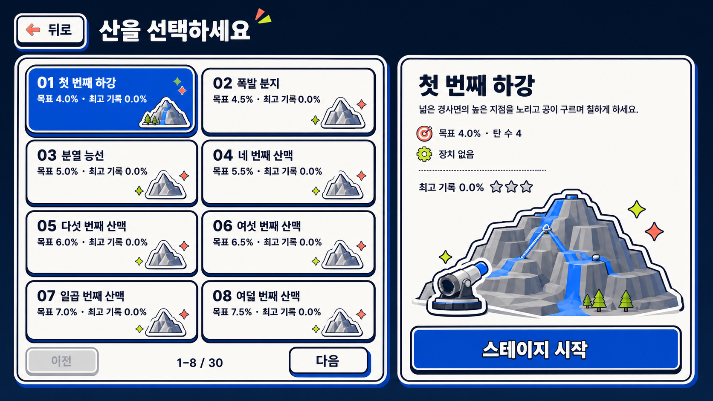
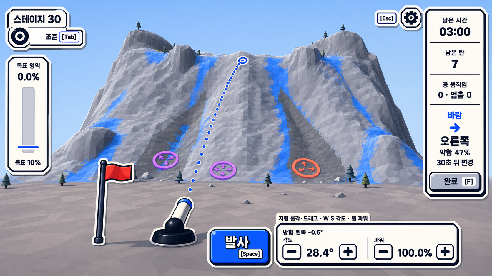
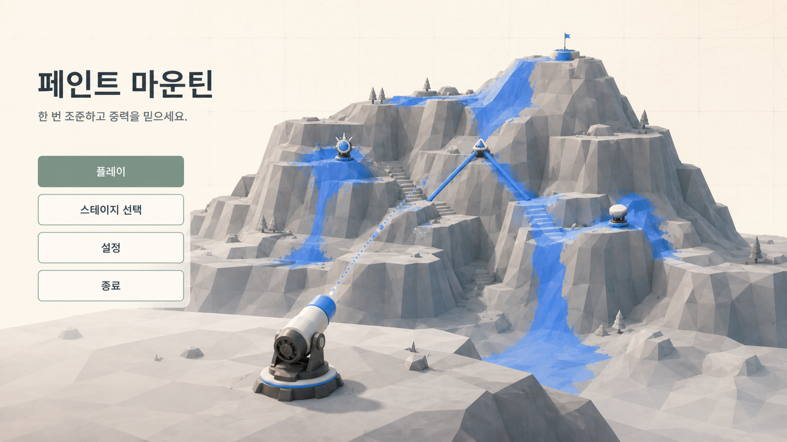
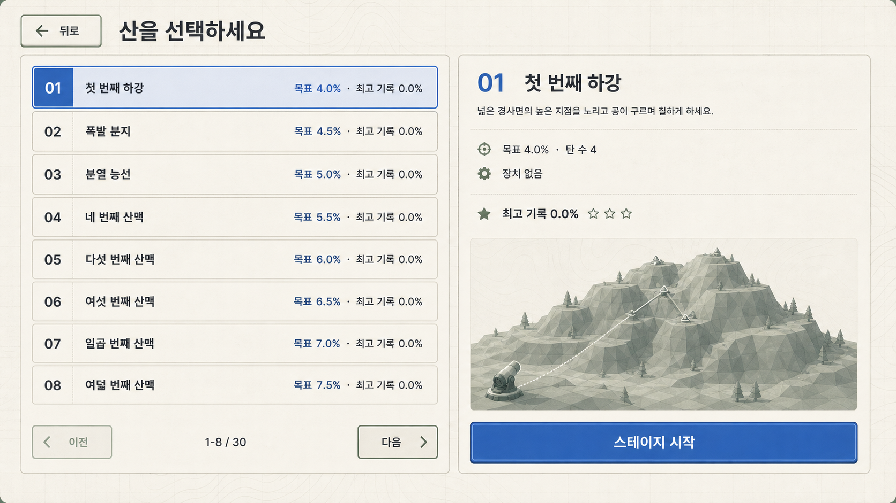
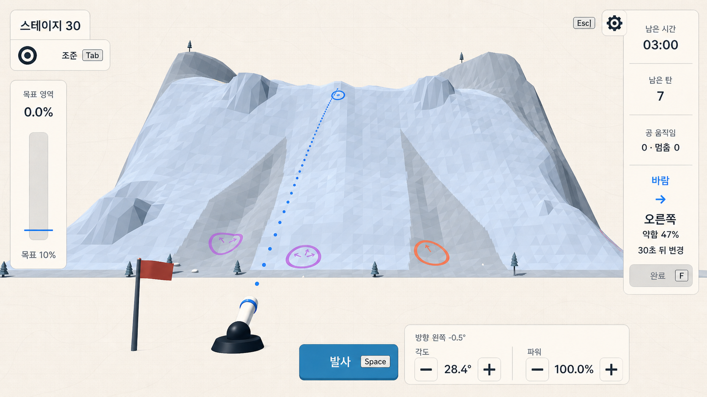

Paint Mountain · 2026-08-08
Casual UI
Directions
메인 메뉴, 스테이지 선택, 조준 화면을 세 가지 시각 언어로 탐색했다. 모두 같은 실제 기능 목록과 16:9 게임 구성을 기준으로 만들었다.


현실적인 권장 조합
메뉴와 스테이지 선택은 A의 촉감 있는 표면과 큰 형태를 쓰고, 실제 플레이 HUD는 C의 얇은 선·낮은 대비·절제된 밀도를 쓰는 조합이 가장 적합하다. B는 개성이 강하지만 두꺼운 외곽선과 높은 채도가 산과 탄착 정보를 가릴 위험이 있어 이벤트성 스킨이나 선택 상태에 제한하는 편이 좋다.
Style A
Paper Toy Adventure
따뜻한 종이 질감, 부드러운 그림자, 둥근 블록, 코발트 포인트. 캐주얼하고 촉감이 있지만 장식 밀도는 낮다.

작은 카드와 한 개의 분명한 시작 버튼으로 진입을 단순화한다.

큰 스테이지 타일과 종이 지도형 미리보기가 친근한 진행감을 만든다.

HUD를 화면 모서리의 작은 촉감 패널로 제한해 산을 넓게 남긴다.
Style B
Sticker Arcade
네이비 외곽선, 코발트·코랄·라임, 평면 스티커 형태. 가장 즉각적이고 활기차지만 화면 점유와 대비를 엄격히 통제해야 한다.

굵은 형태와 직접적인 CTA로 아케이드 게임 같은 첫인상을 만든다.

실제 상태인 목표 4%, 공 4개, 최고 0을 유지한 고대비 선택 화면이다.

입력 그룹은 명확하지만 두꺼운 테두리는 플레이 HUD에서 선택적으로 써야 한다.
Style C
Quiet Field Guide
크림 바탕, 슬레이트·세이지·코발트, 얇은 선, 등고선과 그리드. 가장 조용하며 퍼즐 정보가 세계 렌더보다 앞서지 않는다.

꾸며낸 좌표나 계기 없이 실제 제목과 메뉴 동작만 남긴다.

지도책 같은 얇은 구조로 많은 스테이지를 차분하게 정리한다.

방향 −0.5°, 각도 28.4°, 파워 100.0%를 작은 계기처럼 정확히 분리한다.
생성 방식과 프롬프트 원칙
모드: built-in ImageGen, 화면별 독립 생성. 공통 조건은 Paint Mountain의 현재 실행 캡처와 주 시각 레퍼런스, 16:9 데스크톱 게임 UI, 실제 버튼과 상태만 사용, 산과 탄착 정보를 가리지 않는 가장자리 UI, shared component system 유지다. 스타일별 프롬프트 요약과 파일 매핑은 README.md에 기록했다.